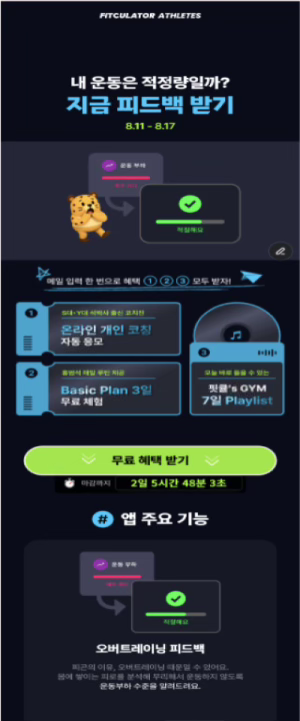
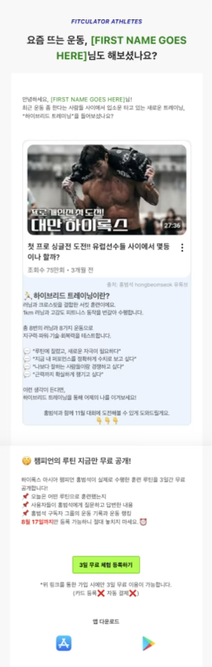

Project 02 · CRM 실험 · 2026.01
전환 저해 요인 검증을 위한 CRM 실험
전략 설계 기반으로 CRM 개입 테스트를 실행하고, 전환 실패 원인을 구조적으로 도출
문제
지원 과정 내 ‘수업참여가능여부’ 문항에서 이탈 집중지원 시작 52.9% 대비 yes/no 응답 전환율 44.96%로 하락
가설
사용자는 일정 제약으로 즉시 선택을 부담스러워한다25–34세 지원 중인 사용자는 참여 의지는 있으나 결정 보류 가능성이 높음
실행
의사결정 부담 완화 메시지 + 상담 CTA 팝업 테스트체류·이탈 시점 기반 온사이트 팝업으로 상담 전환 유도
원인
상담 CTA가 탐색 단계 사용자에게 진입장벽으로 작용클릭은 발생했지만, 사용자는 아직 상담보다 정보 탐색이 필요한 단계로 판단
핵심 인사이트
CRM은 설득이 아니라 의사결정을 쉽게 만드는 구조여야 한다
NEXT ACTION
정보 제공형 CTA + 단계별 CRM 시나리오 재설계상담 CTA 기반 의사결정 보조 팝업

Project 03 · CRM · 참여 설계 · 2025.12–2026.01
정보 구조·메시지 개선으로 TIL 이벤트 참여율 10% 달성
가이드·메시지·운영 구조를 통합 설계해 참여 퍼널을 개선한 CRM 프로젝트
문제
TIL 참여율 3–7% 수준으로 정체참여 안내는 있었지만 실제 작성 행동까지 이어지는 장벽 존재
원인
보상보다 정보 이해도·작성 부담·공지 분산이 핵심 문제사용자가 왜/어떻게/언제 참여할지 빠르게 판단하기 어려운 구조
실행
가이드 축소 + 단계별 메시지 + 접점 다각화가이드 4P→2P · 온사이트 팝업 · 알림톡 · 클래스챗 병행
핵심 인사이트
참여는 설득이 아니라 구조에서 발생한다
NEXT ACTION
운영형 이벤트도 퍼널 단계별 메시지로 설계참여 전 · 참여 중 · 마감 직전 상황에 맞춰 메시지와 접점 분기
상황별 팝업 3종 — 참여 퍼널 단계에 맞춰 메시지 분기
STEP 01
참여 진입장벽 축소STEP 02
참여 행동 유도STEP 03
마감 기반 전환 압박
Project 04 · 랜딩페이지 · CRM 자동화 · 2025.07–08
회원가입률 6배 개선 — 랜딩 구조 및 CRM 전략 기반 전환 최적화
랜딩페이지 전면 개편 · 페르소나 기반 메시지 전략 · 이메일 CRM 자동화
문제 정의
유입 대비 회원가입 전환율이 낮고, 폼 제출 단계에서 이탈 발생랜딩 내 가치 전달과 CTA 흐름이 전환을 충분히 만들지 못한 상태
핵심 액션
- 혜택 중심 구조로 재설계
- Sticky CTA 적용
- 폼 UX 최적화
- 자기관리형 vs 기록갱신형 분리
- 랜딩 A/B 테스트
- Welcome / Resend 자동화
- 데이터 기반 메시지 개선
핵심 인사이트
전환은 광고가 아니라
랜딩 구조와 CRM 흐름에서 완성된다
랜딩페이지 2종 A/B + 이메일 CRM 3종
LANDING 01

LANDING 02

WELCOME

RESEND 01

RESEND 02